E3.3: Exercise: Improved Solar Radiation Modelling¶
Using the material above and the global albedo datasets from the main class material, calculate an improved estimate of the total absorbed power per unit area per month (MJ per m^2 per month) for the Earth land surface.
You should do this with a function that will take as input the year and returns the monthly total absorbed power density (MJ m^-2 per month) and the monthly total power density (MJ m^-2 per month).
You might have an optional argument minute_step to control the resolution of the calculation as above.
You could then use this to derive latitudinal variations in annual and latitudinal total absorbed power per unit area.
AE3.3 Answer: Improved Solar Radiation Modelling¶
The function definition should look something like:
def absorbed_power_density(year,minute_step=60):
'''Function to calculate the monthly total absorbed solar radiation
power density in MJ / m^2 for a given year
given an input dataset albedo and associated lat and lon
information (in degrees).
The shape of the albedo dataset is: (12,nlat,nlon)
Aguments:
year : integer of the year
Options:
minute_step : integer: resolution of steps in minutes. Must be
a divisor of 60 (e.g. 10, 15, 30, 60)
'''
The first thing to do is sort out the lat and lon arrays to be the same shape as albedo.
Before that, we’d better read in the albedo, lat and lon datasets here though:
import sys
sys.path.insert(0,'files/python')
# modification of masked.py
from masked2 import masked
import numpy as np
year = 2010
data = masked(dataset=['lat','lon','BHR_SW'],year=year)
# take the first lat and lon only as they are all the same
lat = data['lat'][0]
lon = data['lon'][0]
albedo = data['BHR_SW']
s = albedo.shape
print s
(12, 360, 720)
# pad out the lat and lon arrays
# this is a bit tricky so test this in parts
# we dont need this repeated for each month though
lat2 = np.array([lat] * s[2]).T
lon2 = np.array([lon] * s[1])
print lat2.shape
print lon2.shape
(360, 720)
(360, 720)
Now put together the code for solar radiation modelling for a given lat/lon
import Pysolar
from datetime import datetime
def solar(year, month, day, hour, lat_deg, lon_deg, minute=0, second=0):
'''Return solar zenith and clear sky radiation
for given lat, lon and time/date
'''
from datetime import datetime
import Pysolar
d = datetime(year, month, day, hour, minute, second)
altitude_deg = Pysolar.GetAltitude(lat_deg, lon_deg, d)
# W m^-2
solar_rad = Pysolar.solar.radiation.GetRadiationDirect(d, altitude_deg)
return 90. - altitude_deg,solar_rad
def radiation(year, month, day, lat, lon,minute_step=30):
rad = []
for hour in xrange(24):
for minute in xrange(0,60,minute_step):
thr = hour + minute/60.
# append data line as tuple
rad.append((thr,) + \
solar(year, month, day, hour, lat, lon, minute=minute) +\
(month, day, lat, lon))
# convert to numpy array
# transpose so access eg zenith as
# rad[0]
rad = np.array(rad).T
return rad
def days_in_month(month,year=2013):
''' number of days in month'''
import calendar
return calendar.monthrange(year,month)[1]
# UCL lat/lon
lat = 51.5248
lon = -0.1336
year = 2013
pd = []
for month in xrange(12):
pd_month = []
ndays = days_in_month(month+1,year=year)
print month,ndays
for day in xrange(ndays):
rad = radiation(year, month+1, day+1, lat, lon)
pd_month.append([rad[2].sum() * 60 * 30])
pd_month = np.array(pd_month).T
pd.append([month,pd_month.sum()])
pd = np.array(pd).T
0 31
1 28
2 31
3 30
4 31
5 30
6 31
7 31
8 30
9 31
10 30
11 31
Putiing that all together now:
# functions so far
import sys
sys.path.insert(0,'files/python')
# modification of masked.py
from masked2 import masked
import numpy as np
import Pysolar
from datetime import datetime
def solar(year, month, day, hour, lat_deg, lon_deg, minute=0, second=0):
'''Return solar zenith and clear sky radiation
for given lat, lon and time/date
'''
from datetime import datetime
import Pysolar
d = datetime(year, month, day, hour, minute, second)
altitude_deg = Pysolar.GetAltitude(lat_deg, lon_deg, d)
# W m^-2
solar_rad = Pysolar.solar.radiation.GetRadiationDirect(d, altitude_deg)
return 90. - altitude_deg,solar_rad
def radiation(year, month, day, lat, lon,minute_step=30):
rad = []
for hour in xrange(24):
for minute in xrange(0,60,minute_step):
thr = hour + minute/60.
# append data line as tuple
rad.append((thr,) + \
solar(year, month, day, hour, lat, lon, minute=minute) +\
(month, day, lat, lon))
# convert to numpy array
# transpose so access eg zenith as
# rad[0]
rad = np.array(rad).T
return rad
def days_in_month(month,year=2013):
''' number of days in month'''
import calendar
return calendar.monthrange(year,month)[1]
Before proceeding, let us examine the variation in total monthly power density with latitude.
With the model developed in the main notes, we would expect no varition with longitude (it was a function of latitude only).
In this more precise model, we would expect only small variation, but we should examine this:
'''
Processing -- test for several lat/long
'''
import numpy.ma as ma
year = 2010
minute_step = 60
data = masked(dataset=['lat','lon','BHR_SW'],year=year)
lat = data['lat'][0]
lon = data['lon'][0]
albedo = data['BHR_SW']
s = albedo.shape
lat = ma.array( [lat] *s[2]).T
lon = ma.array([lon] * s[1])
# array for output
absorbed = ma.array(np.zeros_like(albedo),mask=albedo.mask)
#
#for i in xrange(lat.shape[0]):
# for j in xrange(lat.shape[1]):
# try it out for 6 samples in longitude, including first and last
lons = range(0,lon.shape[1],lon.shape[1]/5) + [lon.shape[1]-1]
# an array to hold the sample pd for the sample
# longitudes
all_pd = []
i = lon.shape[0]/2
for j in lons:
pd = []
# loop over month
for month in xrange(12):
pd_month = []
ndays = days_in_month(month+1,year=year)
print i,j,month,ndays
# loop over days
for day in xrange(ndays):
# solar radiation for that day
rad = radiation(year, month+1, day+1, \
lat[i,j], lon[i,j],minute_step=minute_step)
pd_month.append([rad[2].sum() * 60 * minute_step])
pd_month = np.array(pd_month).T
pd.append([pd_month.sum()])
# pd is the power density for each month
all_pd.append(pd)
# MJ per m2
all_pd = np.array(all_pd).squeeze()
180 0 0 31
180 0 1 28
180 0 2 31
180 0 3 30
180 0 4 31
180 0 5 30
180 0 6 31
180 0 7 31
180 0 8 30
180 0 9 31
180 0 10 30
180 0 11 31
180 144 0 31
180 144 1 28
180 144 2 31
180 144 3 30
180 144 4 31
180 144 5 30
180 144 6 31
180 144 7 31
180 144 8 30
180 144 9 31
180 144 10 30
180 144 11 31
180 288 0 31
180 288 1 28
180 288 2 31
180 288 3 30
180 288 4 31
180 288 5 30
180 288 6 31
180 288 7 31
180 288 8 30
180 288 9 31
180 288 10 30
180 288 11 31
180 432 0 31
180 432 1 28
180 432 2 31
180 432 3 30
180 432 4 31
180 432 5 30
180 432 6 31
180 432 7 31
180 432 8 30
180 432 9 31
180 432 10 30
180 432 11 31
180 576 0 31
180 576 1 28
180 576 2 31
180 576 3 30
180 576 4 31
180 576 5 30
180 576 6 31
180 576 7 31
180 576 8 30
180 576 9 31
180 576 10 30
180 576 11 31
180 719 0 31
180 719 1 28
180 719 2 31
180 719 3 30
180 719 4 31
180 719 5 30
180 719 6 31
180 719 7 31
180 719 8 30
180 719 9 31
180 719 10 30
180 719 11 31
import pylab as plt
plt.plot(lon[0,lons],all_pd)
plt.xlim(-180.,180.)
plt.xlabel('latitude')
plt.ylabel('power density total per month')
<matplotlib.text.Text at 0x108fc52d0>
So, with this in mind, let’s just take a single value per latitude as otherwise the processing cost will be rather high.
Putting this into a function (in this case, reading the albedo, lat and long internally):
def absorbed_power_density(year,minute_step=60):
'''Function to calculate the monthly total absorbed solar radiation
power density in MJ / m^2 for a given year
given an input dataset albedo and associated lat and lon
information (in degrees).
The shape of the albedo dataset is: (12,nlat,nlon)
Aguments:
year : integer of the year
Options:
minute_step : integer: resolution of steps in minutes. Must be
a divisor of 60 (e.g. 10, 15, 30, 60)
'''
data = masked(dataset=['lat','lon','BHR_SW'],year=year)
lat = data['lat'][0]
lon = data['lon'][0]
albedo = data['BHR_SW']
s = albedo.shape
lat = ma.array( [lat] *s[2]).T
lon = ma.array([lon] * s[1])
# array for output
absorbed = ma.array(np.zeros_like(albedo),mask=albedo.mask)
power_density = ma.array(np.zeros_like(albedo),mask=albedo.mask)
#
for i in xrange(0,lat.shape[0]):
print 'lat',lat[i,0]
# single longitude
for j in [lat.shape[1]/2]:
pd = []
# loop over month
for month in xrange(12):
pd_month = []
ndays = days_in_month(month+1,year=year)
# loop over days
for day in xrange(ndays):
# solar radiation for that day
rad = radiation(year, month+1, day+1, \
lat[i,j], lon[i,j],minute_step=minute_step)
# get rid of -ves
rad[rad<0] = 0
pd_month.append([rad[2].sum() * 60 * minute_step])
pd_month = np.array(pd_month).T
pd.append([pd_month.sum()])
pd = np.array(pd).squeeze().T
# pd is the power density for each month
# load this into all longitudes
for k in xrange(power_density.shape[0]):
power_density[k,i,:] = pd[k]
power_density /= 10.**6 # MJ per m2
absorbed = power_density * (1 - albedo)
return absorbed,power_density
# this will still take some minutes to calculate
absorbed,power_density = absorbed_power_density(year,minute_step=60)
lat 89.6957
lat 89.196
lat 88.6963
lat 88.1966
lat 87.6969
lat 87.1972
lat 86.6975
lat 86.1978
lat 85.6981
lat 85.1984
lat 84.6987
lat 84.1991
lat 83.6994
lat 83.1997
lat 82.7
lat 82.2003
lat 81.7006
lat 81.2009
lat 80.7012
lat 80.2015
lat 79.7018
lat 79.2021
lat 78.7024
lat 78.2027
lat 77.703
lat 77.2033
lat 76.7036
lat 76.2039
lat 75.7042
lat 75.2045
lat 74.7048
lat 74.2051
lat 73.7054
lat 73.2057
lat 72.706
lat 72.2063
lat 71.7066
lat 71.2069
lat 70.7072
lat 70.2075
lat 69.7078
lat 69.2081
lat 68.7084
lat 68.2087
lat 67.709
lat 67.2093
lat 66.7096
lat 66.2099
lat 65.7102
lat 65.2105
lat 64.7108
lat 64.2111
lat 63.7114
lat 63.2118
lat 62.7121
lat 62.2124
lat 61.7127
lat 61.213
lat 60.7133
lat 60.2136
lat 59.7139
lat 59.2142
lat 58.7145
lat 58.2148
lat 57.7151
lat 57.2154
lat 56.7157
lat 56.216
lat 55.7163
lat 55.2166
lat 54.7169
lat 54.2172
lat 53.7175
lat 53.2178
lat 52.7181
lat 52.2184
lat 51.7187
lat 51.219
lat 50.7193
lat 50.2196
lat 49.7199
lat 49.2202
lat 48.7205
lat 48.2208
lat 47.7211
lat 47.2214
lat 46.7217
lat 46.222
lat 45.7223
lat 45.2226
lat 44.7229
lat 44.2232
lat 43.7235
lat 43.2238
lat 42.7241
lat 42.2245
lat 41.7248
lat 41.2251
lat 40.7254
lat 40.2257
lat 39.726
lat 39.2263
lat 38.7266
lat 38.2269
lat 37.7272
lat 37.2275
lat 36.7278
lat 36.2281
lat 35.7284
lat 35.2287
lat 34.729
lat 34.2293
lat 33.7296
lat 33.2299
lat 32.7302
lat 32.2305
lat 31.7308
lat 31.2311
lat 30.7314
lat 30.2317
lat 29.732
lat 29.2323
lat 28.7326
lat 28.2329
lat 27.7332
lat 27.2335
lat 26.7338
lat 26.2341
lat 25.7344
lat 25.2347
lat 24.735
lat 24.2353
lat 23.7356
lat 23.2359
lat 22.7362
lat 22.2365
lat 21.7369
lat 21.2372
lat 20.7375
lat 20.2378
lat 19.7381
lat 19.2384
lat 18.7387
lat 18.239
lat 17.7393
lat 17.2396
lat 16.7399
lat 16.2402
lat 15.7405
lat 15.2408
lat 14.7411
lat 14.2414
lat 13.7417
lat 13.242
lat 12.7423
lat 12.2426
lat 11.7429
lat 11.2432
lat 10.7435
lat 10.2438
lat 9.74411
lat 9.24441
lat 8.74471
lat 8.24501
lat 7.74532
lat 7.24562
lat 6.74592
lat 6.24622
lat 5.74653
lat 5.24683
lat 4.74713
lat 4.24743
lat 3.74774
lat 3.24804
lat 2.74834
lat 2.24864
lat 1.74895
lat 1.24925
lat 0.74955
lat 0.249853
lat -0.249845
lat -0.749542
lat -1.24924
lat -1.74894
lat -2.24864
lat -2.74833
lat -3.24803
lat -3.74773
lat -4.24743
lat -4.74712
lat -5.24682
lat -5.74652
lat -6.24622
lat -6.74591
lat -7.24561
lat -7.74531
lat -8.24501
lat -8.7447
lat -9.2444
lat -9.7441
lat -10.2438
lat -10.7435
lat -11.2432
lat -11.7429
lat -12.2426
lat -12.7423
lat -13.242
lat -13.7417
lat -14.2414
lat -14.7411
lat -15.2408
lat -15.7405
lat -16.2402
lat -16.7399
lat -17.2396
lat -17.7393
lat -18.239
lat -18.7387
lat -19.2384
lat -19.7381
lat -20.2377
lat -20.7374
lat -21.2371
lat -21.7368
lat -22.2365
lat -22.7362
lat -23.2359
lat -23.7356
lat -24.2353
lat -24.735
lat -25.2347
lat -25.7344
lat -26.2341
lat -26.7338
lat -27.2335
lat -27.7332
lat -28.2329
lat -28.7326
lat -29.2323
lat -29.732
lat -30.2317
lat -30.7314
lat -31.2311
lat -31.7308
lat -32.2305
lat -32.7302
lat -33.2299
lat -33.7296
lat -34.2293
lat -34.729
lat -35.2287
lat -35.7284
lat -36.2281
lat -36.7278
lat -37.2275
lat -37.7272
lat -38.2269
lat -38.7266
lat -39.2263
lat -39.726
lat -40.2257
lat -40.7253
lat -41.225
lat -41.7247
lat -42.2244
lat -42.7241
lat -43.2238
lat -43.7235
lat -44.2232
lat -44.7229
lat -45.2226
lat -45.7223
lat -46.222
lat -46.7217
lat -47.2214
lat -47.7211
lat -48.2208
lat -48.7205
lat -49.2202
lat -49.7199
lat -50.2196
lat -50.7193
lat -51.219
lat -51.7187
lat -52.2184
lat -52.7181
lat -53.2178
lat -53.7175
lat -54.2172
lat -54.7169
lat -55.2166
lat -55.7163
lat -56.216
lat -56.7157
lat -57.2154
lat -57.7151
lat -58.2148
lat -58.7145
lat -59.2142
lat -59.7139
lat -60.2136
lat -60.7133
lat -61.213
lat -61.7127
lat -62.2123
lat -62.712
lat -63.2117
lat -63.7114
lat -64.2111
lat -64.7108
lat -65.2105
lat -65.7102
lat -66.2099
lat -66.7096
lat -67.2093
lat -67.709
lat -68.2087
lat -68.7084
lat -69.2081
lat -69.7078
lat -70.2075
lat -70.7072
lat -71.2069
lat -71.7066
lat -72.2063
lat -72.706
lat -73.2057
lat -73.7054
lat -74.2051
lat -74.7048
lat -75.2045
lat -75.7042
lat -76.2039
lat -76.7036
lat -77.2033
lat -77.703
lat -78.2027
lat -78.7024
lat -79.2021
lat -79.7018
lat -80.2015
lat -80.7012
lat -81.2009
lat -81.7006
lat -82.2002
lat -82.7
lat -83.1996
lat -83.6993
lat -84.199
lat -84.6987
lat -85.1984
lat -85.6981
lat -86.1978
lat -86.6975
lat -87.1972
lat -87.6969
lat -88.1966
lat -88.6963
lat -89.196
lat -89.6957
# this is how you can save a numpy array
np.savez('files/data/absorbed.npz',absorbed=np.array(absorbed),\
power_density=np.array(power_density),mask=absorbed.mask)
# now next time we should be able to load it
try:
f = np.load('files/data/absorbed.npz')
mask = f['mask']
absorbed,power_density = ma.array(f['absorbed'],mask=mask),\
ma.array(f['power_density'],mask=mask)
except:
absorbed,power_density = absorbed_power_density(year,minute_step=60)
import pylab as plt
cmap = plt.get_cmap('Spectral')
vmax = absorbed.max()/2
vmin = 0.
for m in xrange(12):
plt.figure(figsize=(7,3))
plt.title('Absorbed radiation Month %02d %d MJ / m^2'%(m,year))
plt.imshow(absorbed[m],cmap=cmap,interpolation='none',vmin=vmin,vmax=vmax)
plt.colorbar()
plt.savefig('files/data/absorbed%02d.jpg'%m)


 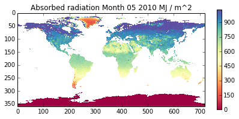
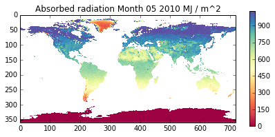
 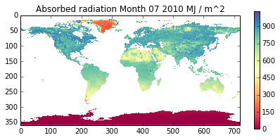
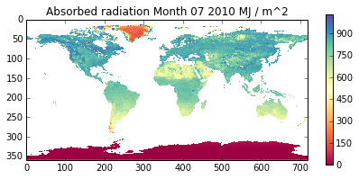
 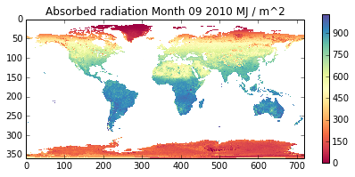
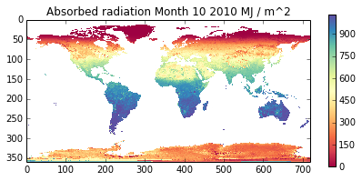
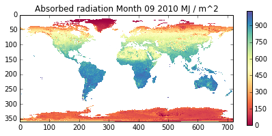
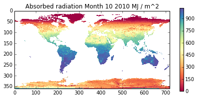

import pylab as plt
cmap = plt.get_cmap('Spectral')
vmax = absorbed.max() * 2./3.
vmin = 0.
for m in xrange(12):
plt.figure(figsize=(7,3))
plt.title('Solar radiation power density Month %02d %d MJ / m^2'%(m,year))
plt.imshow(power_density[m],cmap=cmap,interpolation='none',vmin=vmin,vmax=vmax)
plt.colorbar()
plt.savefig('files/data/power%02d.jpg'%m)

 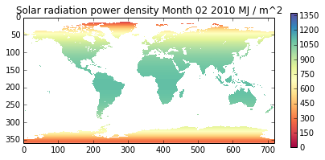
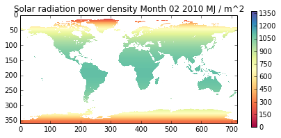

 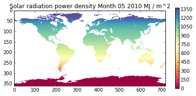
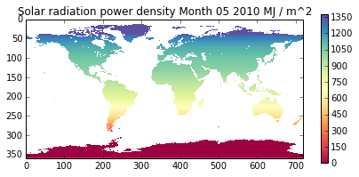


 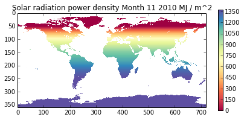
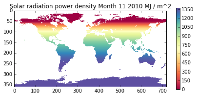
# make some movies!???
import os
for t in ['power','absorbed']:
for m in xrange(12):
cmd = 'convert files/data/%s%02d.jpg files/data/%s%02d.gif'%(t,m,t,m)
print cmd
os.system(cmd)
cmd = "convert -delay 100 -loop 0 \
files/data/%s??.gif files/data/%s_movie.gif"%(t,t)
os.system(cmd)
convert files/data/power00.jpg files/data/power00.gif
convert files/data/power01.jpg files/data/power01.gif
convert files/data/power02.jpg files/data/power02.gif
convert files/data/power03.jpg files/data/power03.gif
convert files/data/power04.jpg files/data/power04.gif
convert files/data/power05.jpg files/data/power05.gif
convert files/data/power06.jpg files/data/power06.gif
convert files/data/power07.jpg files/data/power07.gif
convert files/data/power08.jpg files/data/power08.gif
convert files/data/power09.jpg files/data/power09.gif
convert files/data/power10.jpg files/data/power10.gif
convert files/data/power11.jpg files/data/power11.gif
convert files/data/absorbed00.jpg files/data/absorbed00.gif
convert files/data/absorbed01.jpg files/data/absorbed01.gif
convert files/data/absorbed02.jpg files/data/absorbed02.gif
convert files/data/absorbed03.jpg files/data/absorbed03.gif
convert files/data/absorbed04.jpg files/data/absorbed04.gif
convert files/data/absorbed05.jpg files/data/absorbed05.gif
convert files/data/absorbed06.jpg files/data/absorbed06.gif
convert files/data/absorbed07.jpg files/data/absorbed07.gif
convert files/data/absorbed08.jpg files/data/absorbed08.gif
convert files/data/absorbed09.jpg files/data/absorbed09.gif
convert files/data/absorbed10.jpg files/data/absorbed10.gif
convert files/data/absorbed11.jpg files/data/absorbed11.gif


This code is still quite slow (even for a single longitude).
You should look it over and see how you might make it more efficient.
Some ideas:
- interpolate the radiation field (over latitude?) and possibly improve by sub sampling over longitude and interpolating that as well
- when calculating daily integrals, don’t start the calculations until the sun is above the horizon (and the same for sunset).
The exercise asks you to perform summations over latitude. This should be simple enough, being of the form:
absorbed.sum(axis=(0,2))
which will sum over axes 0 (month) and 2 (longitude).
Total absorbed involves working out the area for each sample pixel and including that in teh calculation. That is left as an exercise here.